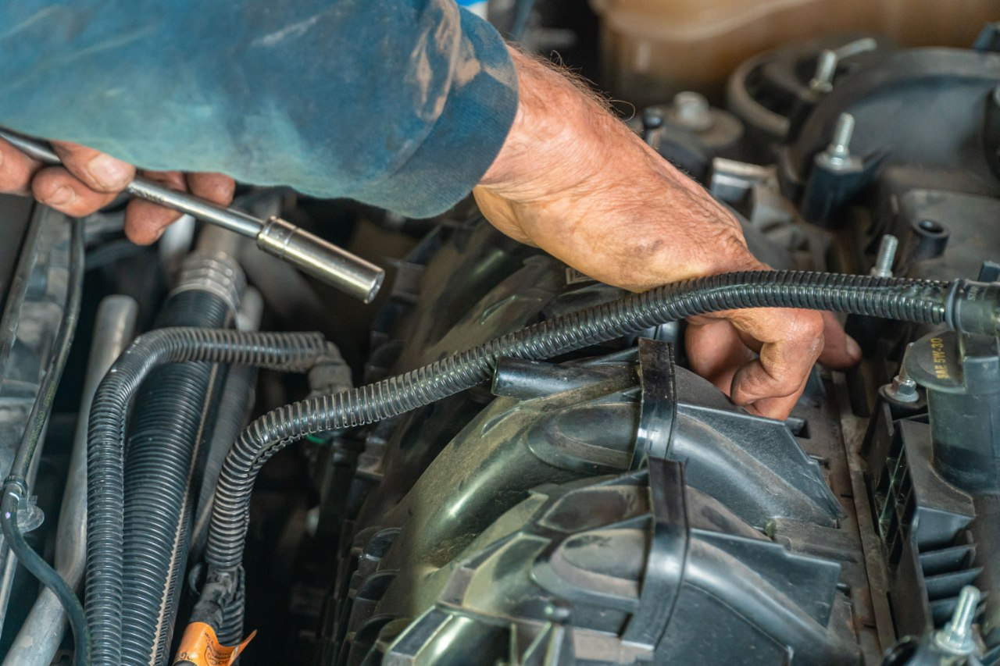

Home / Maintenance
How to Change Spark Plugs and How to Know It's Time
Quick answer
Worn spark plugs cause rough idle, hard starting, hesitation, misfires and poorer fuel economy. Replace them at the interval in your service schedule, using the exact plug type for your engine. Work on a cold engine, change one cylinder at a time, and tighten to the torque in your manual.

Signs your spark plugs are worn
- Rough or shaky idle
- Engine misfires or hesitates under acceleration
- Hard starting, especially in cold weather
- Worse fuel economy than usual
- Loss of power
- A steady or flashing check engine light with a misfire code such as P0301. See Check Engine Light: Flashing vs Steady
A flashing check engine light can mean a misfire that damages the catalytic converter, so don't keep driving hard.
How often to change spark plugs
It depends on the plug type and engine. Copper plugs wear faster, while iridium and platinum plugs often last much longer. Your service schedule gives the correct interval, and turbocharged and direct-injection engines can be harder on plugs. If your car is old and the history is unknown, inspect or replace them.
Tools and parts you need
- The correct spark plugs for your engine (check the manual or a reliable parts catalogue)
- Spark plug socket with a rubber insert, extension and ratchet
- Torque wrench
- Gap gauge, if the plugs are not pre-gapped
- Dielectric grease for boots, where your manufacturer allows it
- Compressed air or a small brush to clear debris around the plug wells
- Gloves and eye protection
How to change spark plugs, step by step
- Let the engine cool completely. Removing plugs from a hot aluminum head can strip threads.
- Disconnect the battery if your manual recommends it, and remove engine covers.
- Work on one cylinder at a time so plug wires and coils stay in the right order.
- Unplug the coil or plug wire and remove the coil pack. Clean around the plug well so dirt can't fall into the cylinder.
- Loosen the old plug with the socket, then unscrew it. Keep the socket straight.
- Compare the old plug with the new one. Check the gap and fit by hand first to avoid cross-threading.
- Tighten with a torque wrench to the value in your manual. Over-tightening can damage the head, and under-tightening causes leaks.
- Refit the coil and connector, then repeat for the other cylinders.
Safety note. Never force a plug that won't turn. If it feels stuck, stop and get advice. Avoid working near a hot exhaust or a running engine.
What old spark plugs can tell you
- Light tan or gray: healthy combustion.
- Black and sooty: rich mixture, short trips or weak ignition.
- Oily: oil getting into the cylinder. Compare with your oil consumption. See How to Read an Oil Dipstick.
- White and blistered: overheating or a lean mixture.
- Heavily worn electrodes: normal end of life.
Common mistakes to avoid
- Using the wrong plug type or heat range
- Skipping the torque wrench
- Mixing up coil packs or plug wires
- Dropping debris into the plug well
- Replacing only one plug when the others are just as old
FAQ
How do I know if my spark plugs need changing?
Rough idle, misfires, hard starting, poor economy and hesitation are the usual signs. A code reader can confirm misfires.
Can I change spark plugs myself?
Many people do, if the plugs are accessible and you have a torque wrench. Some engines need parts removed first. Check your manual.
How long do spark plugs last?
It varies by plug type and engine. Follow your service schedule.
Do I need to change all the plugs at once?
Yes. They wear together, and a mixed set can run unevenly.
This guide is general information, not professional advice. Check your own vehicle's manual for exact specs and read the disclaimer before starting any job.